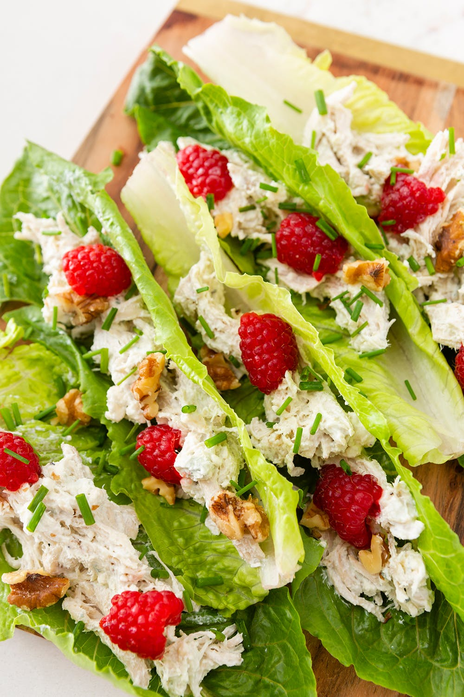
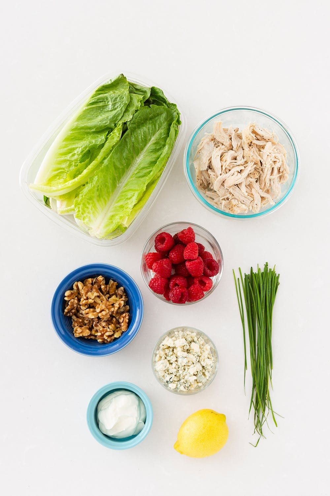

account_circle
Pasta_Lover62
{" "}
Subscribe
Chicken Lettuce Wrap
Ingredients
- 1/4 cup full-fat Greek yogurt
- 2 cooked chicken breasts, shredded
- 8 raspberries, split in half
- 1/3-1/2 cup blue cheese crumbles
- juice of 1/2 lemon
- 8 large, sturdy romaine lettuce leaves
- 2-3 tablespoons walnuts, toasted and crumbled
- 2 teaspoon chives, sliced into 1/4-inch pieces
-

step 1
In a large bowl, combine yogurt and blue cheese. Season with lemon juice to taste. Stir in chicken until fully coated. Adjust with more yogurt, blue cheese, and/or lemon if needed. -

step 2
Spoon shredded chicken onto center ribs of romaine lettuce leaves, dividing meat equally between them. Place on a cutting board or rimmed baking sheet.
Set them upright next to each other to prevent leaves from falling over. Evenly
sprinkle walnut pieces, raspberry halves, and chives between lettuce leaves. Serve immediately.